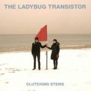
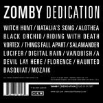
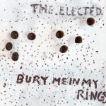
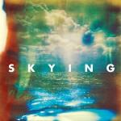
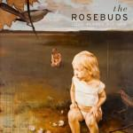
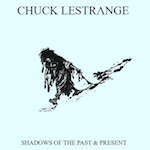

Music Reviews
-

The Ladybug Transistor Clutching Stems
The Ladybug Transistor haven’t always crafted the perfect picture of coherency with their sometimes shambolic albums, but they’ve always had a remarkable knack for knocking out enjoyable indie pop.
Matt Montgomery reviews... -

Zomby Dedication
Zomby may be capable of a lot of things – from mastering any genre he attempts to being the most reliably unreliable live act this side of Amy Winehouse – unfortunately, it seems that he's not capable of finishing what he starts.
Mark Davison is impressed... and irritated... -

The Elected Bury Me In My Rings
Blake Sennett emerges from retirement to make another record. Bury Me In My Rings appears to be the soundtrack to his escape from life.
Randi Dietiker advises talented young artists to not quit their day job... -

The Horrors Skying
The Horrors cement any critical deliberations to rest with Skying, an assured, bracing record that exemplifies graceful maturity.
Juan Edgardo Rodríguez leaves the eye shadow at home... -
Kaiser Chiefs The Future Is Medieval
Don't worry, it's not that bad, but it is pretty bad - so I'd listen to some Jackson Five while you read this if I were you. ABC should offset it nicely.
Joe Iliff can't believe he volunteered for this... -
SBTRKT SBTRKT
SBTRKT secures a ripe batch of featured vocalists while displaying the smoother side of dubstep.
Randi Dietiker reviews... -
Eleanor Friedberger Last Summer
The Fiery Furnaces haven't split up, but Eleanor Friedberger goes solo for this gorgeous, vintage-feel record.
Stephen Wragg is charmed... -

Incubus If Not Now, When?
After a five year hiatus, Incubus return with seventh album, If Not Now, When?, which is also the title of a 1982 Primo Levi novel. But then, we all knew that anyway, didn't we?
Joe Rivers has never been so acutely aware he's no longer 15 years old... -

The Rosebuds Loud Planes Fly Low
Three years and one divorce after their last album, The Rosebuds are back to shed a sombre, mellow light on their troubles.
David Hogg is feeling melancholy... -

Chuck Lestrange Shadows of the Past & Present
Chuck Lestrange delivers a delicate balance between those elusive senses - of groove, and of serenity. And there's some macho rapsterism thrown in for good measure.
Akhil Sood reviews...